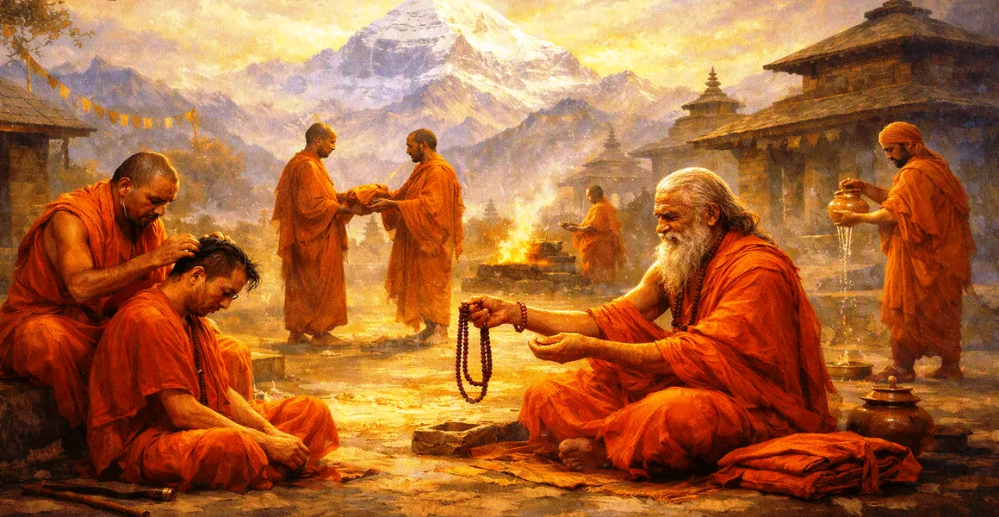

The Procedure of Renunciation
The thirteenth chapter of the Kailasa Samhita delves deeper into the philosophical principles and inner stages of absolute renunciation (Tyaga).
Sage Suta explains how true renunciation goes beyond external rituals, requiring a radical shift in consciousness and total release of ego attachments.
This chapter guides seekers toward the ultimate realization of inner freedom through unwavering devotion to Lord Shiva.
Chapter 13 Highlights
Philosophical Tyaga
Explores the subtle psychological and spiritual dimensions of letting go of illusions.
Mental Dissolution of Ego
Stresses the complete eradication of 'I' and 'mine' as the core of true renunciation.
Freedom from Dualities
Teaches equanimity in pleasure and pain, praise and censure, through supreme wisdom.
Inner Transformation
Shows how the fire of divine knowledge burns away all karmic residue and delusion.
Refuge in Shiva
Directs the liberated mind toward permanent immersion in the consciousness of Mahadeva.
Bridge to Pranava Wisdom
Prepares the seeker for exploring the sacred mystery of Pranava as Shiva in Chapter 14.
Core Topics in This Chapter
The True Essence of Renunciation (Tyaga)
Sage Suta elaborates that Tyaga is not merely physical abandonment of objects, but the profound mental relinquishment of desire.
When the intellect recognizes the transient nature of worldly phenomena, true detachment arises naturally from within.
Erradicating Mental Delusion and Attachment
The chapter emphasizes that worldly bondage is caused by ignorance and the identification of the soul with the perishable body.
By piercing through this illusion with the sword of wisdom, the seeker breaks free from repeated cycles of sorrow.
Dissolving the Ego and Possessiveness
Renunciation is complete when notions of 'I am the doer' and 'this is mine' are entirely eradicated from the consciousness.
The renunciate surrenders individual ego into the cosmic expanse of Lord Shiva's supreme reality.
Achieving Supreme Equanimity of Mind
A truly renounced soul remains unshaken amidst honor and insult, pleasure and pain, heat and cold.
This inner stability reflects the unperturbed peace of Mahadeva meditating in the Himalayas.
Continuous Absorption in Shiva Consciousness
With the mind emptied of worldly clutter, it naturally flows toward constant remembrance and meditation on Lord Shiva.
The seeker experiences unbroken bliss, realizing that the observer and the observed are ultimately one.
The Supreme Fruit of Complete Detachment
Sage Suta concludes that complete renunciation leads directly to Jivanmukti and ultimate absorption in Brahman.
Such a soul becomes a beacon of light, inspiring others to seek the immortal truth beyond temporal illusions.
Transition to Chapter 14
Having elucidated the deep philosophical procedures of renunciation in Chapter 13, Sage Suta introduces Chapter 14, 'The Pranava in the Form of Shiva'.
Chapter 14 explores the profound identity between the sacred sound Pranava (Om) and the supreme form of Lord Shiva.
Key Teachings of Chapter 13
Mental Relinquishment
True detachment is an internal state of mind rather than mere physical abandonment.
Root of Bondage
Ignorance and false identification with the body create all worldly suffering.
Egoless Living
Eradicating 'I' and 'mine' opens the gateway to boundless divine peace.
Steadfast Equanimity
An enlightened mind remains peaceful amidst all dualities of life.
Shiva Immersion
Constant remembrance of Mahadeva leads to permanent spiritual liberation.
Supreme Wisdom
Renunciation clears the lens of perception to witness the absolute truth.
Spiritual Reflection
Renunciation is the art of letting go of the unreal to embrace the eternal. When we stop clinging to fleeting desires and egoistic claims, we discover that our true home is the infinite, boundless consciousness of Lord Shiva.
Living the Message of Chapter 13
Practice mindfulness daily to observe attachments and gently release possessive thoughts.
Approach life's challenges with inner calm, seeing every circumstance as an opportunity for spiritual growth.
Dedicate your actions and thoughts to Lord Shiva, finding peace beyond the dualities of the world.
Key Spiritual Concepts
The profound philosophical principle underlying true inner renunciation.
The complete abandonment of possessive feelings and 'mine-ness'.
The plane of absolute mental equilibrium and equanimity across all dualities.
The cutting of worldly bondage through the sharpness of divine wisdom.
The state of supreme identity and oneness with Lord Shiva.
The illuminating wisdom of the sacred sound leading toward Chapter 14.
Chapter Summary
Kailasa Samhita Chapter 13 presents The Procedure of Renunciation. Detailing the inner philosophical essence of Tyaga, the eradication of ego and possessiveness, and the attainment of supreme equanimity, this chapter guides seekers toward absolute spiritual freedom. It paves the way for Chapter 14, 'The Pranava in the Form of Shiva', exploring the ultimate sound and form of the divine.
Frequently Asked Questions
1. What is the primary subject of Kailasa Samhita Chapter 13?
Chapter 13 explores the philosophical dimensions of renunciation (Tyaga), detailing how inner detachment dissolves ego and leads to absolute liberation.
2. How does Chapter 13 differ from Chapter 12?
While Chapter 12 outlines the external rules and rituals of taking Sannyasa, Chapter 13 delves deeper into the mental and philosophical essence of absolute renunciation.
3. What is the true essence of renunciation according to this chapter?
True renunciation is the complete mental detachment from worldly illusions, desires, and the sense of 'mine' and 'I'.
4. How does renunciation help a spiritual seeker?
It cuts the knots of worldly bondage, stills the turbulence of the mind, and establishes the seeker in unbroken peace and oneness with Lord Shiva.
5. What are the spiritual fruits of understanding Chapter 13?
Studying this chapter purifies the intellect, inspires deep spiritual introspection, and guides seekers toward supreme wisdom.
6. What is the next chapter for navigation after Chapter 13?
The next chapter for navigation is Chapter 14, titled 'The Pranava in the Form of Shiva'.
“When the mirror of the mind is cleansed by total renunciation, the infinite light of Lord Shiva reflects effortlessly within.”
Continue Through Kailasa Samhita
Chapter 13 details The Procedure of Renunciation. Continue to Chapter 14, The Pranava in the Form of Shiva.